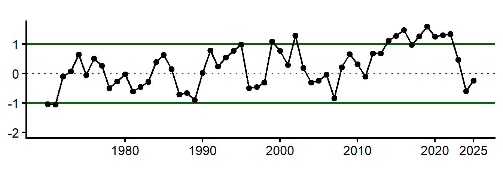

Code
knitr::opts_chunk$set(
fig.height = 2.5,
warning = FALSE,
message = FALSE
)knitr::opts_chunk$set(
fig.height = 2.5,
warning = FALSE,
message = FALSE
)Average price per pound, total landings (lbs), commercial revenue, and n vessels are all below the long term mean, declining since 2020. However, landings and revenue have rebounded slightly. Average revenue per vessel, which had been declining since the mid-2010s to a low in 2020, has skyrocketed well above the LT mean after 2022.
plaice_socioeco <- here::here("data/intermediate/AMERICANPLAICE_Commercial_Indicators_Master.csv")
data <- read.csv(plaice_socioeco)avgprice <- data |>
dplyr::filter(INDICATOR_NAME == "AVGPRICE_AMERICANPLAICE_2025_DOLlb")
NEesp2::plt_indicator(data = avgprice,
ar = 1/4,
include_trends = TRUE) |>
plotly::ggplotly()landings <- data |>
dplyr::filter(INDICATOR_NAME == "Commercial_AMERICANPLAICE_Landings_LBS")
NEesp2::plt_indicator(data = landings,
ar = 1/4,
include_trends = TRUE) |>
plotly::ggplotly() totalrev <- data |>
dplyr::filter(INDICATOR_NAME == "TOTALANNUALREV_AMERICANPLAICE_2025Dols")
NEesp2::plt_indicator(data = totalrev,
ar = 1/4,
include_trends = TRUE) |>
plotly::ggplotly() nvessels <- data |>
dplyr::filter(INDICATOR_NAME == "N_Commercial_Vessels_Landing_AMERICANPLAICE")
NEesp2::plt_indicator(data = nvessels,
ar = 1/4,
include_trends = TRUE) |>
plotly::ggplotly() vesselrev <- data |>
dplyr::filter(INDICATOR_NAME == "AVGVESREVperYr_AMERICANPLAICE_2025_DOLlb")
NEesp2::plt_indicator(data = vesselrev,
ar = 1/4,
include_trends = TRUE) |>
plotly::ggplotly() plt_monthly <- function(data, month_num, title) {
plt <- data |>
dplyr::filter(MONTH == month_num) |>
NEesp2::plt_indicator(
ar = 1/4,
include_trends = TRUE
) +
ggplot2::ggtitle(paste0(title, month.abb[month_num]))
if( ! unique(data$AREA)[1] == "stock_area") {
plt <- plt +
ggplot2::facet_wrap(~AREA, ncol = 2)
}
return(plt)
}Water temperatures control spawning; optimum spawning temperatures range between 3-6C but can thrive from -0.5 to 13C. Spawning occurs from March - June, peaking in April/May. Distribution appears to be defined by warm summer and fall temperatures.
From ESP: “Bottom temperature anomaly and SSB were both significant factors influencing plaice shift to deeper and more northward distribution.”
Temperatures in the stock area are near the long-term mean for all months in 2025, down from a peak in temperatures from 2020-2023 and 10+ years above the LT mean.
url1 <- here::here("data-raw/2026/AMERICANPLAICE_hubert_bottomT.csv")
url2 <- here::here("data-raw/2026/AMERICANPLAICE_glorys_bottomT.csv")bt_data <- read.csv(url1) |>
dplyr::bind_rows(read.csv(url2)) |>
dplyr::group_by(AREA, MONTH, YEAR, INDICATOR_NAME, INDICATOR_UNITS) |>
dplyr::summarise(DATA_VALUE = mean(DATA_VALUE, na.rm = TRUE), .groups = "drop") |>
dplyr::mutate(INDICATOR_NAME = "monthly_bottomT")
for(i in 1:12) {
plt_monthly(data = bt_data, month_num = i, title = "Monthly bottom temperature in stock area - ") |>
print()
}Sea surface temperature is an important consideration for plaice recruitment. The thermal limit for survival and incubation of American plaice eggs is 14C, and recent sea surface temperatures in late spring-early summer (the end of the spawning season) have exceeded that threshold.
update with BTS SST plot
Currents, changes in circulation patterns, and shelf-slope dynamics are responsible for egg and larval transport.
When the strength of Labrador current is weak, a higher proportion of warm water coming from the Gulf Stream enters the Gulf of Maine, increasing Gulf of Maine water temperatures. The position of the Gulf Stream has shifted northward and the Gulf of Maine has seen temperature warming rates much higher than that of the global average in recent decades.
data <- ecodata::gsi
create_gsi <- function(data){
gsi <- data |>
tidyr::separate(Time, c("Year", "Month"), sep = "\\.")
return(gsi)
}
gsi <- create_gsi(data) |>
dplyr::filter(Var == 'gulf stream index') |>
dplyr::rename(INDICATOR_NAME = Var,
YEAR = Year,
DATA_VALUE = Value) |>
dplyr::group_by(YEAR) |>
dplyr::mutate(avg = mean(DATA_VALUE))
plt_indicator_gsi <- function(data) {
plt <- data |>
dplyr::group_by(INDICATOR_NAME) |>
dplyr::mutate(mean = mean(DATA_VALUE, na.rm = TRUE),
sd = sd(DATA_VALUE, na.rm = TRUE)) |>
ggplot2::ggplot(ggplot2::aes(x = as.numeric(YEAR),
y = avg
)) +
ggplot2::geom_hline(ggplot2::aes(
yintercept = .data$mean + .data$sd
),
color = "darkgreen",
linetype = "solid"
) +
ggplot2::geom_hline(ggplot2::aes(
yintercept = .data$mean - .data$sd
),
color = "darkgreen",
linetype = "solid"
) +
ggplot2::geom_hline(ggplot2::aes(
yintercept = .data$mean
),
color = "darkgreen",
linetype = "dotted"
) +
ggplot2::geom_point() +
ggplot2::geom_path() +
ggplot2::xlim(c(1996, 2023)) +
ggplot2::scale_y_continuous(labels = scales::comma) +
ggplot2::scale_x_continuous(breaks = c(1980, 1990, 2000, 2010, 2020, 2025),
limits = c(1970, 2025)) +
ggplot2::theme_classic(base_size = 16) +
ggplot2::theme(strip.text = ggplot2::element_text(size = 16),
axis.title = ggplot2::element_blank(),
aspect.ratio = 1/4)
return(plt)
}
##plot
plt_indicator_gsi(gsi)
From ESP: “Reproductive rate (recruits per spawner) of American plaice is significantly related to temperature and the North Atlantic Oscillation, where greatest recruitment rates occur at extreme cold temperatures.
nao <- read.csv(here::here('data-raw/inputs/nao_index.csv'))
nao_yearly <- nao |>
dplyr::mutate(yearly_nao = rowMeans(dplyr::across(Jan:Dec), na.rm = TRUE))|>
dplyr::filter(Year >= 1970) |>
dplyr::rename(YEAR = Year, DATA_VALUE = yearly_nao) |>
dplyr::mutate(INDICATOR_NAME = "yearly_nao") |>
dplyr::select(YEAR, DATA_VALUE, INDICATOR_NAME)
NEesp2::plt_indicator(data = nao_yearly,
ar = 1/4,
include_trends = TRUE) |>
plotly::ggplotly() From ESP: “AMO was the most prevalent significant variable between both the condition index and WAA analyses, higher AMO = better condition and weight at age. Recruits per spawner increased with increasing AMO values up to a point, but then declined.”
AMO has been greater than +1 SD of the long term mean since 2020, indicating possible better condition and recruitment for plaice.
amo <- read.csv(here::here('data-raw/inputs/amo_index.csv'))
amo_yearly <- amo |>
dplyr::group_by(Year) |>
dplyr::summarize(Average_SSTA = mean(SSTA, na.rm = TRUE)) |>
dplyr::filter(Year >= 1970) |>
dplyr::rename(YEAR = Year, DATA_VALUE = Average_SSTA) |>
dplyr::mutate(INDICATOR_NAME = "yearly_amo")
NEesp2::plt_indicator(data = amo_yearly,
ar = 1/4,
include_trends = TRUE) |>
plotly::ggplotly() Commercial landings and revenue have hovered around -1 SD of the long term mean since 2015, with the exception for revenue in 2021. N vessels has steadily declined since the mid-2000s and is now below -1SD of the LT mean. Average price per pound and revenue per vessel have fluctuated in the past decade but have been near or above the LT mean.
pollock_socioeco <- here::here("data/intermediate/ATLANTICPOLLOCK_Commercial_Indicators_Master.csv")
data <- read.csv(pollock_socioeco)avgprice <- data |>
dplyr::filter(INDICATOR_NAME == "AVGPRICE_ATLANTICPOLLOCK_2025_DOLlb")
NEesp2::plt_indicator(data = avgprice,
ar = 1/4,
include_trends = TRUE) |>
plotly::ggplotly() landings <- data |>
dplyr::filter(INDICATOR_NAME == "Commercial_ATLANTICPOLLOCK_Landings_LBS")
NEesp2::plt_indicator(data = landings,
ar = 1/4,
include_trends = TRUE) |>
plotly::ggplotly() totalrev <- data |>
dplyr::filter(INDICATOR_NAME == "TOTALANNUALREV_ATLANTICPOLLOCK_2025Dols")
NEesp2::plt_indicator(data = totalrev,
ar = 1/4,
include_trends = TRUE) |>
plotly::ggplotly() nvessels <- data |>
dplyr::filter(INDICATOR_NAME == "N_Commercial_Vessels_Landing_ATLANTICPOLLOCK")
NEesp2::plt_indicator(data = nvessels,
ar = 1/4,
include_trends = TRUE) |>
plotly::ggplotly() vesselrev <- data |>
dplyr::filter(INDICATOR_NAME == "AVGVESREVperYr_ATLANTICPOLLOCK_2025_DOLlb")
NEesp2::plt_indicator(data = vesselrev,
ar = 1/4,
include_trends = TRUE) |>
plotly::ggplotly() Larval and juvenile occurrence fluctuates seasonally with bottom temperature. Inshore-offshore movements are linked to BT until they are 2 years old. Spawning is linked to BT between 4.5-8 degC. Spawning occurs in the fall/winter and peaks in Dec/Jan.
Small juveniles (YOY) move inshore in May and remain inshore until January, with the exception of southern Massachusetts Bay where they move offshore to escape high temps in June. Move offshore in January when temperatures drop to < 4C. Return inshore in May of year 2 when temps are >4C and then move offshore permanently in October.
Monthly BT in the stock area has a long-term increase for all months. Highest mean BT occur in Oct-Nov, around 9 deg C.
url1 <- here::here("data-raw/2026/ATLANTICPOLLOCK_hubert_bottomT.csv")
url2 <- here::here("data-raw/2026/ATLANTICPOLLOCK_glorys_bottomT.csv")bt_data <- read.csv(url1) |>
dplyr::bind_rows(read.csv(url2)) |>
dplyr::group_by(AREA, MONTH, YEAR, INDICATOR_NAME, INDICATOR_UNITS) |>
dplyr::summarise(DATA_VALUE = mean(DATA_VALUE, na.rm = TRUE), .groups = "drop") |>
dplyr::mutate(INDICATOR_NAME = "monthly_bottomT")
for(i in 1:12) {
plt_monthly(data = bt_data, month_num = i, title = "Monthly bottom temperature in stock area - ") |>
print()
}Larvae and juveniles drift with currents, away from spawning grounds in the Gulf of Maine and Scotian Shelf.
plt_indicator_gsi(gsi)